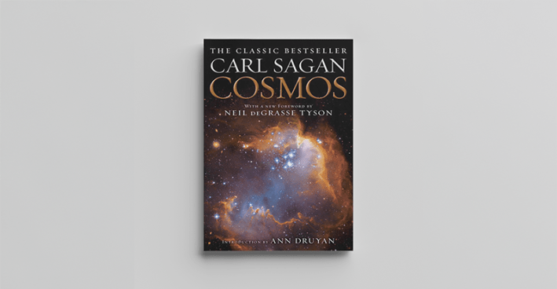
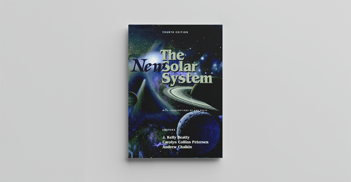
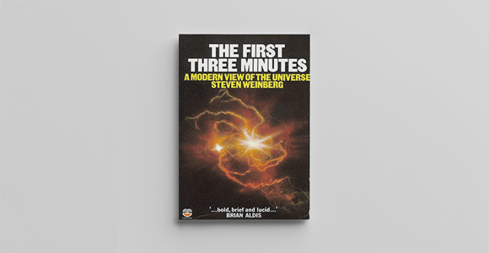
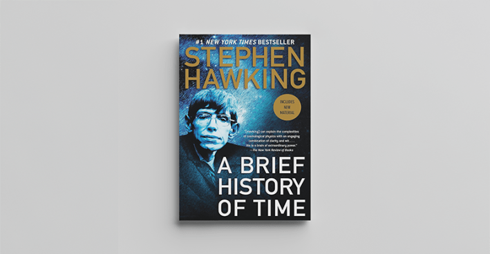
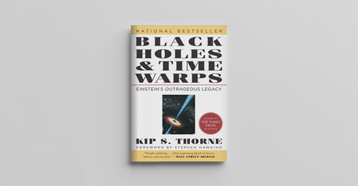
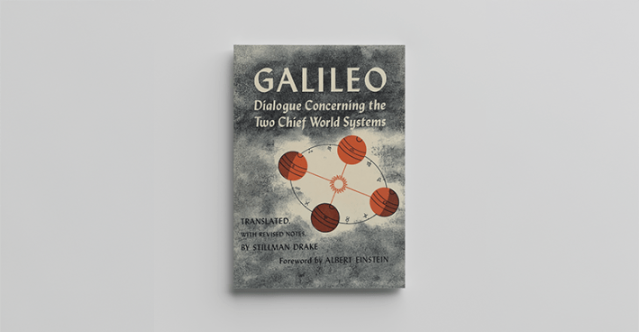
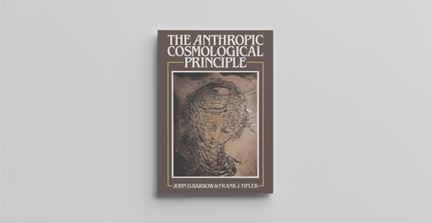
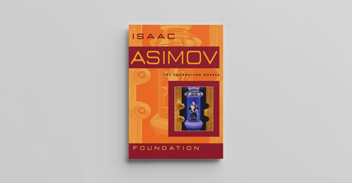
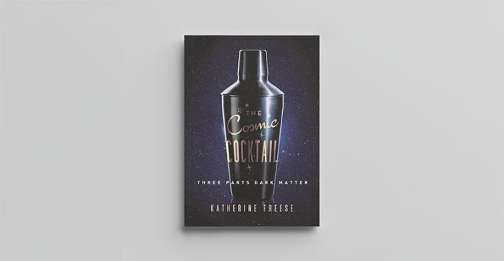
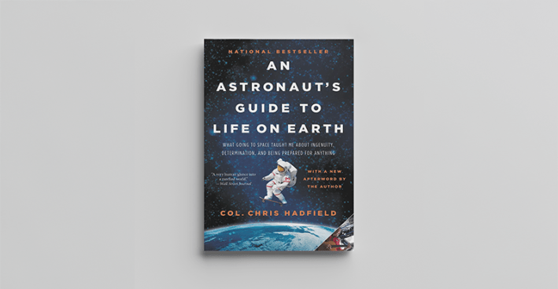

We pride ourselves on the surprising vantage points and elegant writing in our articles at Nautilus. Those qualities don't come easy. They arise from the authority of our writers.
In the vast field of space and astronomy, we often turn to Sean Raymond, George Musser, and Corey Powell to seek and explain the mysteries of the universe to you. Their many articles for Nautilus include “The Planets with the Giant Diamonds Inside”(Powell), “Roadmap to Alpha Centauri” (Musser), and “The Stars Foretell Our Doom” (Raymond).
All three writers were delighted to recommend their favorite books about space and astronomy and offer personal reasons why. Each book is followed by who recommended it.
Cosmos by Carl Sagan

Penguin Random House
“The Cosmos is rich beyond measure—in elegant facts, in exquisite interrelationships, in the subtle machinery of awe,” Sagan wrote. The importance of the book is hard to overstate. How many kids' eyes did it open to the wonders of astronomy? I remember it being like an explorer's guide to the Solar System. —Raymond
The New Solar System by J. Kelly Beatty, Carolyn Collins Petersen, & Andrew Chaikin

Cambridge University Press
Hands down the single best book on planetary science, filled with glorious images and meaty scientific explanations. The authors, who are leading science journalists, assembled chapters by the domain experts on each aspect of the solar system. —Musser

Fontana
This book came out when I was 11 and it blew my young mind, even if I didn't fully understand it until a few years later. In passionate and meticulously clear language, Weinberg lays out the modern Big Bang story of creation and explains how we know it is true. The most remarkable part is the titular moment-by-moment account of how a soup of energy transformed into particles and atoms and an infant universe and did so in less time than it takes to hard-boil an egg. —Powell

Bantam
When I read this in my first year of college, it felt like I was learning that everything I thought I knew was just the tip of a huge, strange iceberg, and that theoretical physics was one way to understand what was below the surface. Reading it definitely helped keep me on the astrophysics career track. —Raymond

W. W. Norton & Company, Inc.
My copy of this book is filled with Post-it notes to bookmark favorite pages. There are a lot of them, especially when Thorne gets into the paradoxes of time travel. He has some of the best explanations I’ve read of Einstein’s theories and black holes, adorned with charming hand-drawn sketches. —Musser

University of California Press
I'll admit, I don't pick this one up very often, but it's a surprisingly lively read. Galileo was a great writer in addition to a great researcher, and the smug satire here shows you exactly why he pissed off the Church. (Hint: The character representing the perspective of the Pope is named “Simplicio.”) Also, this book is a useful tonic for anyone who thinks they know who Galileo was and what he said. —Powell

Oxford University Press
My favorite part of this book, which is saying a lot, is the index. Entries such as “reality, validity denied,” and “interstellar communications, motivations for,” give you a sense of the scope of this book. Whether you ultimately accept the authors’ argument about the centrality of life in the universe, this book will make you a smarter person. —Musser

Bantam
The Foundation series is like an action-packed psychological mystery, set in a galaxy that's so different than our own (but within the realm of extrapolation). Rereading the Foundation books, I realized that Asimov in the 1950s was already touching on subjects that related with my own astronomical research. He discusses what types of stars are likely to host rocky planets like Earth and makes some reasonable assertions that are now being directly tested with exoplanet-hunting missions. —Raymond

Princeton University Press
No one knows what dark matter is, but no one does a better job in going down the list of options than theoretical astrophysicist Freese. It’s fun to read, with anecdotes about knocking back margaritas before major scientific announcements and accidentally insulting the Queen of Sweden. —Musser

Little, Brown and Company
In 2013, Hadfield had already gone viral on YouTube by performing “Space Oddity” aboard the International Space Station. Then this book came out and cemented his status as an icon of the new space culture: sincere, slightly ironic, and unabashedly nerdy, the antithesis of The Right Stuff machismo. Yes, Hadfield tells you exactly what life is like aboard an orbiting tin can. But he also confides that his kids play a game called "The Colonel Says," in which they gently mock his earnest bits of astronaut-dad wisdom. —Powell 
Lead image: Sergey Nivens / Shutterstock